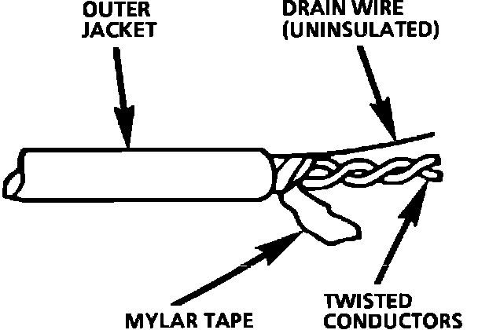
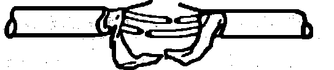
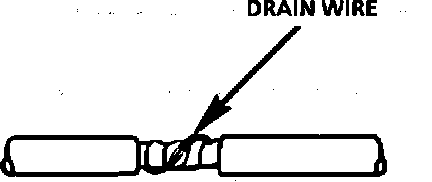

Splicing Twisted/Shielded Cable
Fig. 15 Twisted/Shielded Cable:

Twisted/shielded cable is sometimes used to protect wiring from electrical noise (stray signals). For example, two-conductor cable of this construction is used between the ECM and the distributor. See Fig. 15 for a breakdown of twisted/shielded cable construction.
Step 1: Remove Outer Jacket
Remove the outer jacket and discard it. Be careful to avoid cutting into the drain wire or the mylar tape.
Step 2: Unwrap the Tape
Unwrap the aluminum/mylar tape, but do not remove it. The tape will be used to rewrap the twisted conductors after the splices have been made.
Fig. 16 The Untwisted Conductors:

Step 3: Prepare the Splice
Untwist the conductors. Then, prepare the splice by following the splicing instructions for copper wire presented earlier. Remember to stagger splices to avoid shorts, Fig. 16.
Fig. 17 The Re-assembled Cable:

Step 4: Re-assemble the Cable
After you have spliced and taped each wire, rewrap the conductors with the mylar tape. Be careful to avoid wrapping the drain wire in the tape. Next, splice the drain wire following the splicing instructions for copper wire. Then, wrap the drain wire around the conductors and mylar tape, Fig. 17.
Fig. 18 Proper Taping:
Step 5: Tape the Cable
Tape over the entire cable using a winding motion, Fig. 18. This tape will replace the section of the jacket you removed to make the repair.